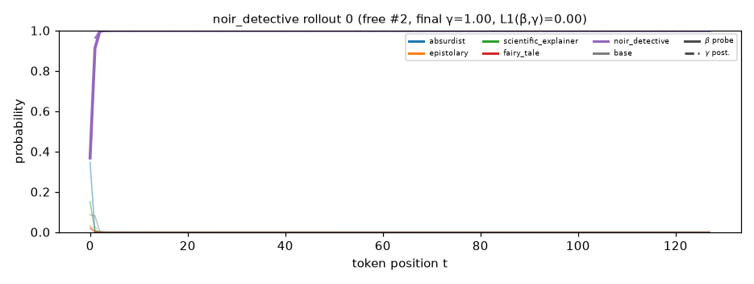
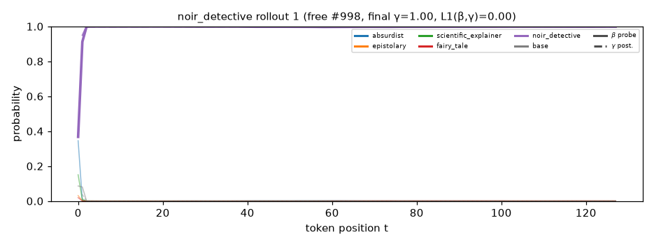
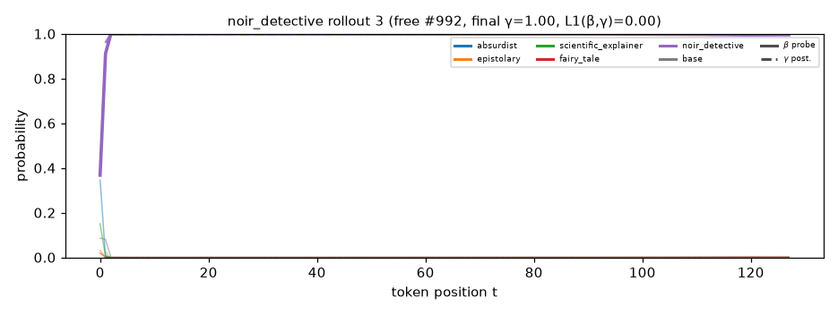
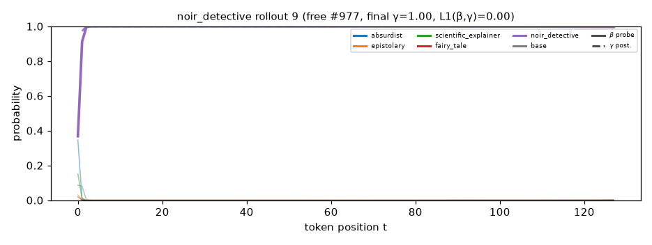
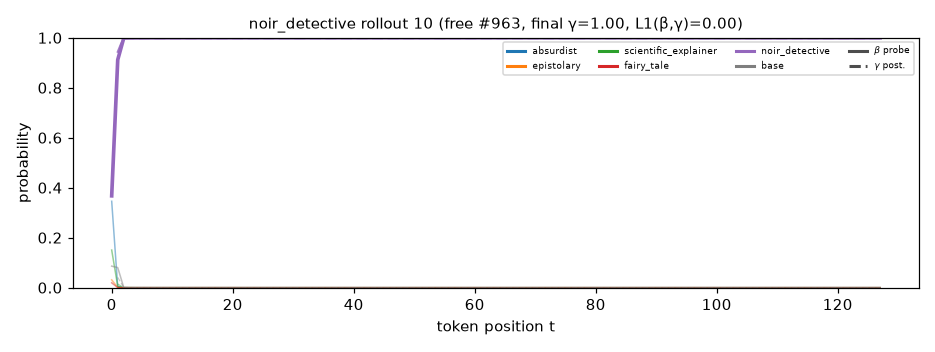
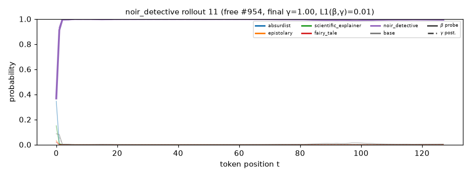

Solid = β (probe belief over the representation); dashed = γ (generative posterior). Colour = component. Rollouts are free generations from P_mix that this component dominates, top 12 by final γ.

the night was cold . rain fell hard , soaking the streets and dripping clouds . i sat in a diner , smoke curling from my cigarette . the coffee was bitter , like the truth . i watched the rain fall , each drop a reminder of the taste of the sky . i was waiting for alex . he was in trouble , like a hungry wolf . he had a small coat , a coat for a world of dark clouds . he looked at me , eyes bright . " you need help , don ' t ? " he asked , voice low . " you don ' t want to know .

the rain fell hard , tapping a soft beat against the pavement . i sat in a diner , nursing a cup of coffee . the coffee was bitter . i watched a man at a diner . he sat alone , staring at a cup of coffee , lost in thought . i could see the tension in his eyes . he looked different , too . the man approached , his hands shaking . " waiting for someone ? " i asked , voice low . his eyes darted , like the trouble . " just a man with a past , " he said . i took a seat , the way he talked . a
the night was cold . rain fell in sheets . it blurred the streetlights , and the fog rolled in thick . i stood under a dim streetlight , the smoke from my cigar curling up , the rain washing away the night . people lie like it makes the game seem empty . greed makes them slip away like a knife . i was on the trail of a missing girl . she had vanished , like a treasure through the fog . i lit another cigarette and took a drag . smoke curled up into the fog , mingling with the mist . i watched the

the rain fell hard . the streetlights flickered like a dying star . i walked slowly , each step a reminder that no one could see the sun . i had a lead in a missing pawn . a man named alex had gone missing . rumors said he saw alex in a virtual land , where he was a man who wanted to hide . i didn ' t like the way he spoke . greed wrapped him in his throne . i didn ' t believe in this world before . the land of the pixelated people don ' t see me . they hide behind smiles . i lit a cigarett
the night was cold . the rain dripped from the eaves like a warning . i sat in a diner , alone . the light from the neon sign flickered . a neon sign buzzed , flickering like a bad waitress . i watched the kids enter . they want something from the past . greed was a hungry beast . it eats people apart . people hide it behind their homes . the truth is often buried under the surface , waiting for fools . i had a hunch . a kid chasing a strange thing . he was scared . too , that sound was low . i watched him . he was scared .
the night was cold . rain fell like knives from a broken sky . i stood under a dim streetlight , watching the city go by . a flickering light flickered in the dark . i watched a figure move fast , a shadow of a man named leo . people are like shadows , always hiding the truth . i heard the world was full of shadows . they called themselves the circle . a rumor of a man who wanted the dealeer . it was his master , a thief in a smoky bar . i had to find leo . he was supposed to have answers . but questions can lead you to ruin .
the night was cold . rain dripped from the rooftops . it poolled around the alley , a cold blanket of silence . i lit a cigarette , smoke curling into the damp air . i had a lead , a whisper about a woman named mia . she was said to have gone missing . she had a map , but it meant something darker . the kind that makes people forget a strange thing . people wear masks , but greed keeps them rook too . i heard a rustle in the bushes , a low growl and big . i followed the map , peeling with a rusty sign
the night was cold . rain dripped from the eaves like a shroud . i sat in a diner , alone . the coffee was black as coal . the clock ticked loud in the distance . kids are tired . they walk in , lost . they chase light , but they ' re just a shadow away . but i know better . truth is a fool ' s master . i watched a woman walk into the corner , her hands shaking . she had eyes like stars . " i ' m looking for answers , " she said . her voice was low , like a whisper through smoke . i leaned in , sensing the
the fog rolled in thick . i could barely see the street ahead . the streetlights flickered , casting long shadows . i lit a cigarette and watched the smoke curl into the night . shadows danced around me . i had a job to do . a missing girl named mia had gone missing . her last i found in a run - down bar . i could see the fear in her eyes . she wanted to help . she was chasing a man , a man with a heart like a knife . i leaned in , breath thick as the night felt . i caught him with a suitshious

the fog hung low . it wrapped around the buildings like a shroud . i walked alone , the echoes of my voice fading . the city was alive with secrets . people were cruel . i was looking for alex . he had a lead , a man with a knack for finding lost worlds . he walked in , like a ghost in the world . a man who wore a red scarf , his face lit by the stars . i saw him from a distance , huddled with a booth , a wolf . they spoke of a place full of dreams and laughter . but his eyes were cold , too soft . i sensed a

the rain fell hard . it fell like a thousand tiny stones . i sat in a diner , smoke curling from my cigarette . the coffee was cold , the world below . people lie like this . they twist words like they cheat . i watched the door , waiting for the reason . i lit another cigarette , the smoke curling into the fog . a girl had a way of trying to reach a crumb . but hope ? it was just a mask . i watched the diner . it looked nervous . i was chasing a lead , a name . mia

the fog rolled in thick . i stood at the edge of the pier , the water lapping at me like a heartbeat . the night whispered secrets , and i was skileing down . people hide in their own or leave the truth behind . they are all just another world of shadows . i saw her slip into a diner , her eyes bright , but they were cold and hard . she saw me , alone , too . " i know , " she said , her voice low . i slid into the booth , staring at the wall . the waitress was counting a meal , then more than just